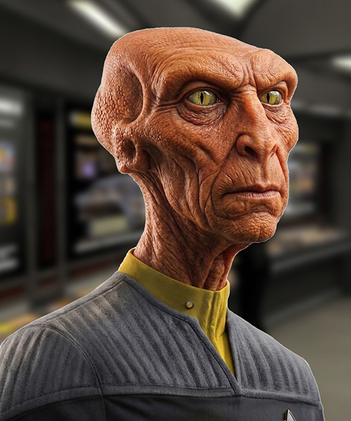

FOTO
Ammiraglio Terenzio Colbotto
Ufficio Controlli Salute Mentale
Comando Flotta Stellare
San Francisco - Sol III
e p.c. Cap. Giuseppe Alighieri
USS Afrodite - NCC-1863
Signor Ammiraglio,
il mio turno di servizio terminò alle 16.00. Mi recai nel mio alloggio dove giunsi alle 16.03. Mi feci una doccia, indossai un'uniforme pulita e bevvi una tazza di the verde.
Alle 16.22 uscii per recarmi presso l'alloggio del Capitano, gentilmente messo a disposizione dell'Ill.mo Dr. Comm. Proff. Egregio Supremo Giuseppe Bottino Professionista Emerito,
per i suoi test.
Giunsi al luogo dell'appuntamento in perfetto orario (ore 16.30), ma aspettai il mio turno per 17 minuti. Alle 16.47 venni fatto accomodare.
All'interno, il SB era solo, seduto su uno sgabello molto alto; appena entrai mi fece cenno di sdraiarmi su di un lettino. Purtroppo, era lungo poco più di 1,85 m, e dovetti sedermi.
Non appena mi fui "accomodato" iniziò a pormi una serie di domande atte a rivelare il mio stato di salute mentale!
Quanto fa sette per otto?
Cinquantasei!
Di quanti gradini è composta la scala per arrivare al suo alloggio?
Uso il turbolift!
Vi sono animali sulla nave? Se sì: quanti?
Sì, circa 200, ma molti, in questo momento, sono in franchigia sulla Terra, o altrove.
Ha mai preso a testate un comignolo?
Un... cosa?
Mi descriva con parole semplici i vostri sentimenti riguardo le Nebule.
Non mi piacciono affatto. Causano sempre qualche interferenza più o meno marcata sulla strumentazione di bordo, e questo non mi garba!
Ha visto qualche bel film ultimamente?
Sì: "The Calling".
È soddisfatto del suo Capitano?
Sì.
Fa mai sogni concernenti i suoi Professori d'Accademia?
No.
Di che colore è la sua uniforme?
Indosso l'uniforme standard del Dipartimento Operazioni della Flotta Stellare!
Qual è il codice a barre del chinotto?
|| ||| | || ||||| | |||
A questo punto il Supremo Bottino mi congedò (ore 17.12).
GM Sery Brax
Addetto Teletrasporto
USS Afrodite - NCC-1863